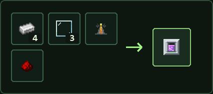

參考·0.2.1
方塊和配方
從模組的配方文件中製作原料。
生物工作臺

- 3 × 玻璃
- 5 × 鐵錠
- 1 × 工作台
載液

- 1 × 藥水
- 1 × 糖
- 1 × 史萊姆球
催化劑

- 1 × 地獄疙瘩
- 1 × 地獄石英
離心機

- 5 × 鐵錠
- 2 × 玻璃
- 1 × 紅石粉
- 1 × 熔爐
黃金注射器

- 1 × 注射器
- 3 × 金錠
- 1 × 紅石粉
誘變基質

- 1 × 載液
- 1 × 經驗瓶
獄髓注射器

- 1 × 黃金注射器
- 2 × 獄髓碎片
逆轉血清

- 1 × 載液
- 1 × 發酵蜘蛛眼
定序儀

- 4 × 鐵錠
- 2 × 玻璃
- 1 × 紅石比較器
- 1 × 望遠鏡
穩定劑

- 1 × 載液
- 1 × 螢石粉
合成器

- 4 × 鐵錠
- 3 × 玻璃
- 1 × 釀造台
- 1 × 紅石粉
注射器

- 1 × 玻璃瓶
- 1 × 鐵錠
- 1 × 鐵粒